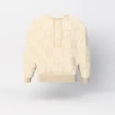

STAND-IN · img/cantilena/front/master.* (departments/apparel/new-pieces-2026-11/build/cantilena/site/cantilena_front_16k.png; 16K, 8640 × 15360)
STAND-IN · img/cantilena/front/master.* (departments/apparel/new-pieces-2026-11/build/cantilena/site/cantilena_front_16k.png; 16K, 8640 × 15360)Where it is going
The suite, by day
The vanity stool, pulled out and turned to the door.
Chapter I · Knitwear
Cantilena
Monogram knit hoodie
Scroll to walk around it
Chapter I
Cantilena
Monogram knit hoodie
A song that keeps returning to the same few notes: the PÖ said again and again, in black and cream, or cream on cream.
- KNIT
- 28-GAUGE DOUBLE JACQUARD, THE PÖ CHECKER
- WEIGHT
- 300 GSM
- YARN
- 30S COMBED COTTON
- COLOURWAY
- CREAM ON CREAM · BLACK AND CREAM
- SIZE
- S · M · L · XL · XXL
USD 595 pre-sale USD 495
Keep a seatThe register sees the pre-sale first.
Details
- Pre-sale
- Made to order. We email your delivery date once production is confirmed. Cancel for a full refund any time before production starts.
- Returns
- Size exchanges within 14 days of delivery, unworn and with tags.
- Care
- Wash cold, inside out, on a gentle cycle. Dry flat. No tumble dryer, no bleach. Care
- Size
- The measurements
Where it is going · C9
The suite, by day
The vanity stool, pulled out and turned to the door.
On the screen in the film, the picture is tomorrow: each piece in the place it is going, with one place kept for someone.
The filmClose
The checker at stitch scale

STAND-IN · img/cantilena/detail-cream/master.* (cream on cream, 8K close-up; 8K, 7680 × 4320)Cream on cream
The gold eyelet and tip
The maker’s notes
Cantilena, the PÖ hoodie
- It begins as a chart: a checker of squares, each 88 stitches by 133 rows, 8.0 by 8.3 cm.
- A light P sits on each dark square, a dark Ö on each light one.
- It comes in two colours: black and cream, or cream on cream, a darker cream in the black’s place.
- The rows run level across the body, a square centred on the centre line; the sleeves take whole squares from the cuff.
- The hood is two panels, the checker knitted whole on each, a light square meeting a dark one along the centre seam.
- It is the house knit, the rib and cords in the darker yarn, the cords through gold eyelets, ending in gold tips.
Behind it: the checker runs on unbroken into the hood’s facing, the same cloth rolled inward.
Read the bookThe packaging
The house lights go down. Black board, cream tissue the colour of the screen, and one gold disc between you and the first scene.
 STAND-IN · img/shared/pack-closed/master.* (packaging/chapter1/renders: closed (the approved final, 3840 px); 8K, 7680 × 4320)
STAND-IN · img/shared/pack-closed/master.* (packaging/chapter1/renders: closed (the approved final, 3840 px); 8K, 7680 × 4320)The closed box, its band and the gold disc
 STAND-IN · img/shared/pack-open/master.* (packaging/chapter1/renders: open (the approved final, 3840 px); 8K, 7680 × 4320)
STAND-IN · img/shared/pack-open/master.* (packaging/chapter1/renders: open (the approved final, 3840 px); 8K, 7680 × 4320)The open box, the piece folded in cream tissue
 STAND-IN · img/shared/pack-disc/master.* (packaging/chapter1/renders: disc (the approved final, 3840 px); 8K, 7680 × 4320)
STAND-IN · img/shared/pack-disc/master.* (packaging/chapter1/renders: disc (the approved final, 3840 px); 8K, 7680 × 4320)The gold disc on the band
 STAND-IN · img/shared/pack-shopping/master.* (packaging/chapter1/renders: shopping (the approved final, 3840 px); 8K, 7680 × 4320)
STAND-IN · img/shared/pack-shopping/master.* (packaging/chapter1/renders: shopping (the approved final, 3840 px); 8K, 7680 × 4320)The shopping bag with cream tissue
 STAND-IN · img/shared/pack-trims/master.* (packaging/chapter1/renders: trims (the approved final, 3840 px); 8K, 7680 × 4320)
STAND-IN · img/shared/pack-trims/master.* (packaging/chapter1/renders: trims (the approved final, 3840 px); 8K, 7680 × 4320)The hang tag, the card and the sealed envelope